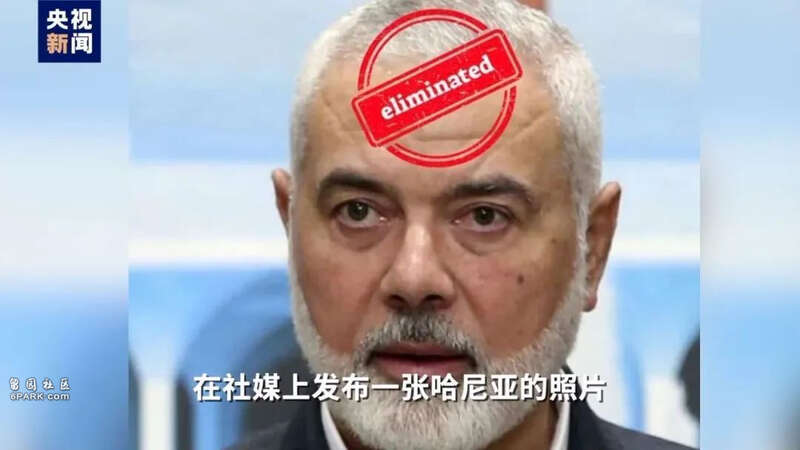
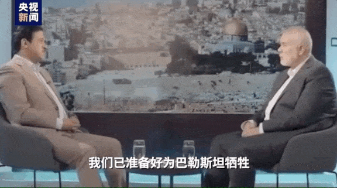
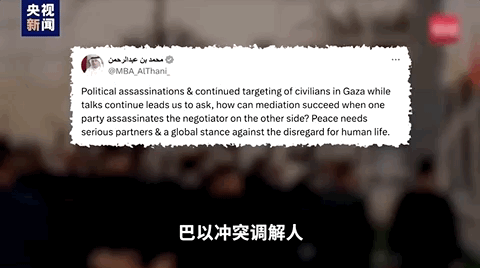
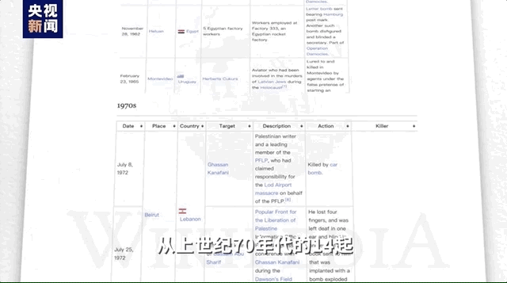

7月最后一天，哈马斯高层哈尼亚在伊朗遇袭身亡。作为以色列的“头号通缉对象”，哈尼亚的死亡让巴以冲突再添变数。目前多方分析指向以色列，哈马斯誓言报复，中东地区再次笼罩在暗杀与报复的阴影之下。
哈尼亚遇刺 和谈添阴霾
哈尼亚在哈马斯中有着极高地位，不少外媒称他是以色列的“头号通缉对象”。2018年，美国国务院将哈尼亚列为恐怖分子。
据报道，哈尼亚在伊朗新任总统就职典礼后，被爆炸装置暗杀。虽然还没有直接责任方声称对哈尼亚遇袭一事负责，但不少分析已怀疑到以色列身上。《纽约时报》也称，此次袭击符合以色列过去对伊朗和黎巴嫩发动的秘密敌对行动的模式。

就在哈尼亚被暗杀数小时后，以色列新闻办公室在社媒上发布一张哈尼亚的照片，额头上印着“清除”字样。虽然这条内容很快被删除，但各方都认为此举有所暗示。
今年4月，哈尼亚在采访中说自己已有近60名亲属在冲突中丧生，但这不会改变哈马斯在加沙地带停火谈判中的立场。他表示：“这只会让我们更坚定，继续沿着斗争和反抗的道路前进，直到我们获得自由，巴勒斯坦人的合法权利顺利恢复。”

巧合的是，就在哈尼亚遇袭几个小时前，黎巴嫩真主党遭以军袭击，其高级领导人舒库尔身亡。
在许多阿拉伯官员眼中，哈尼亚是本轮冲突停火谈判的主要对话者。7月初，哈尼亚还就停火与卡塔尔和埃及的调解人员接触。
美国有线电视新闻网称，哈尼亚在巴以人质和停火谈判中发挥了关键的斡旋作用，而他的身亡将对和平谈判产生重大影响。

冤冤相报 暗杀阴霾笼罩中东和平之路
哈尼亚遭暗杀身亡，哈马斯誓言复仇，其发言人称，以色列将为这一“令人发指的罪行”付出代价。
内塔尼亚胡紧接着宣称，任何针对以色列的侵略行为都会付出沉重代价 。

回顾历史，“暗杀-报复”的循环似乎是哈以冲突的主旋律。
华盛顿特区阿拉伯中心研究员拉米·库里表示，暗杀哈马斯和真主党等组织的领导人长期以来一直是以色列的一项战略。
维基百科甚至设有一个名为“以色列暗杀名单”的页面，从这份长长的名单能够看出，以色列实施暗杀及暗杀企图的数量呈指数级增长。从上世纪70年代的14起，上升至本世纪头十年内的150多起，再到2020年以来的25起。

1993年，《奥斯陆和平协议》签署，巴勒斯坦领导人阿拉法特与以色列总理拉宾在白宫的历史性握手，曾让世人看到了短暂的和平曙光。
1995年11月，拉宾遇刺身亡，凶手是以色列的极右翼激进犹太主义分子。之后，《奥斯陆和平协议》名存实亡，一切和平进程土崩瓦解。
2004年，以色列使用导弹“定点清除”了哈马斯运动精神领袖亚辛，在这之后，催生了更多针对以色列的袭击行动。
几十年过去了，巴以冲突山重水复，却从未见柳暗花明。